Addressing the core challenge of aggregating features extracted from multiple visual cameras.
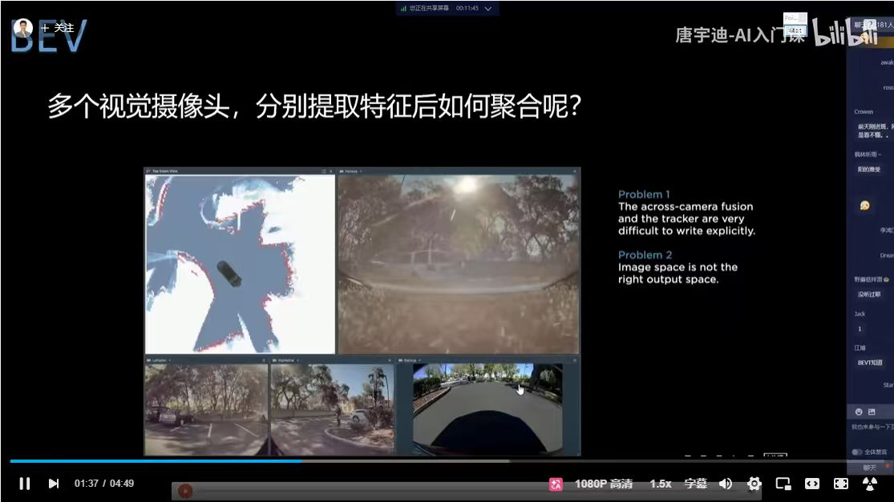
This slide highlights the fundamental problems encountered when aggregating multi-camera features:
Visualizing the mapping of camera images into a unified high-dimensional feature space.
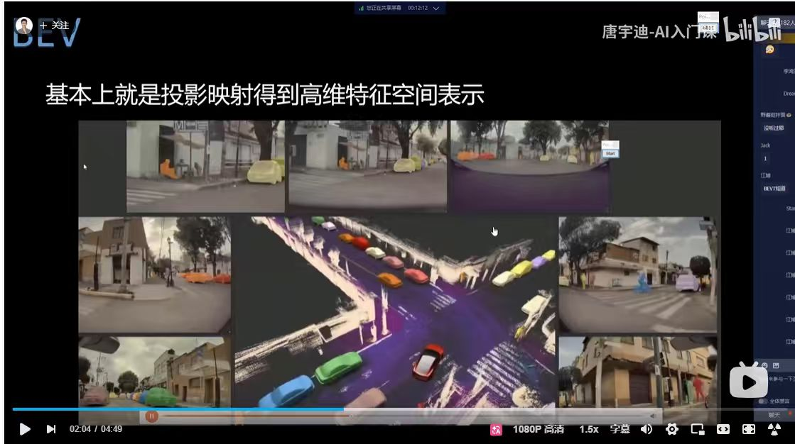
This slide demonstrates the fundamental outcome of the BEV process: mapping multiple camera inputs into a unified 3D representation:
Summarizing the motivation and core challenges that BEV perception aims to address.
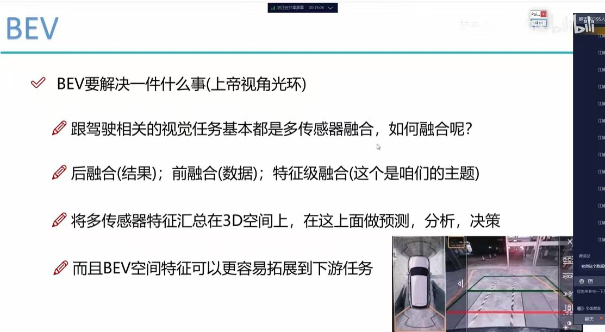
This slide encapsulates "What problem BEV solves," often referred to as the "God's Eye View Aura":
Exploring the transition from 3D spatial BEV to 4D spatiotemporal feature representation.
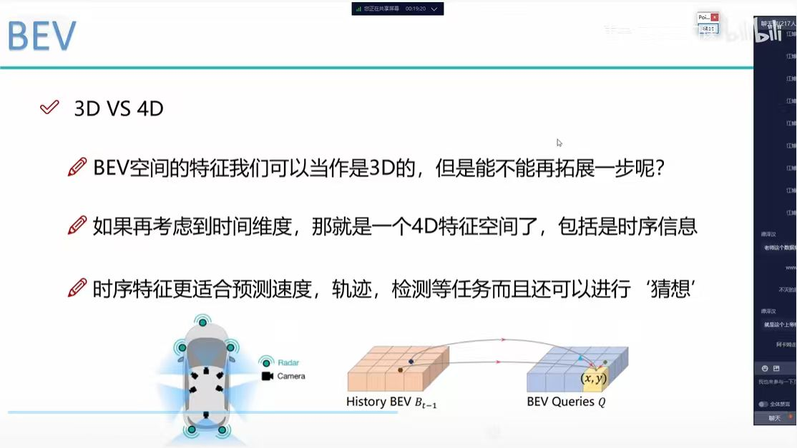
This slide introduces the concept of extending 3D BEV features into the 4D spatiotemporal domain:
Addressing the critical necessity and methodology of feature alignment in multi-sensor BEV perception.
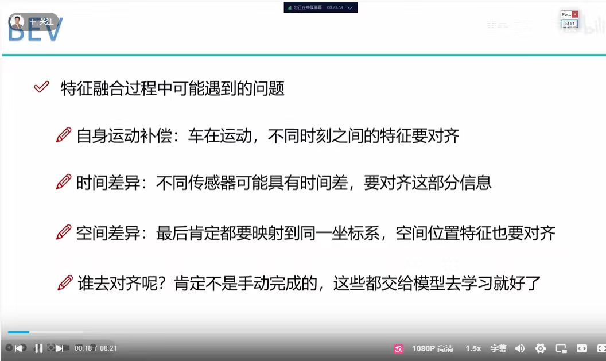
This slide outlines the fundamental challenges in ensuring feature alignment across time, space, and sensors during the BEV feature fusion process:
Summarizing the core output and defining characteristics of the Bird's Eye View representation.
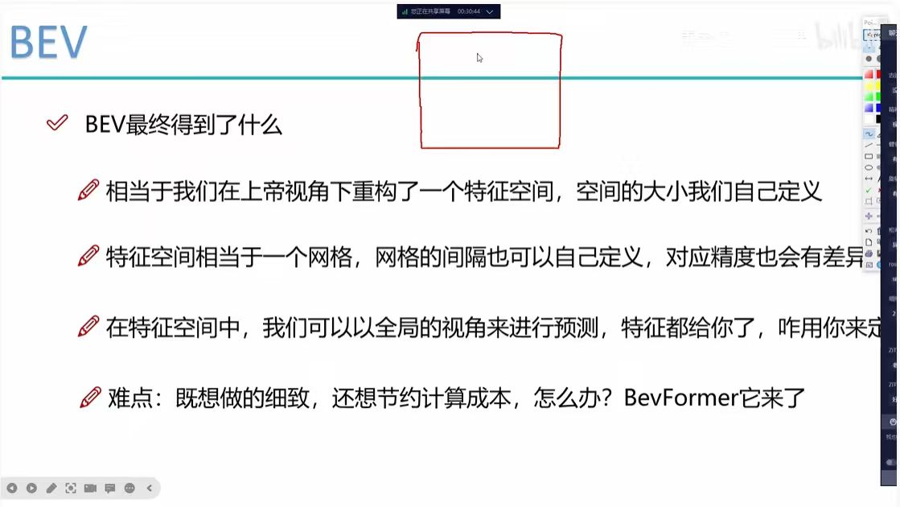
This slide summarizes what the BEV process ultimately achieves and highlights a key transition in research:
Introducing the fundamental BEVFormer framework for camera-based perception.
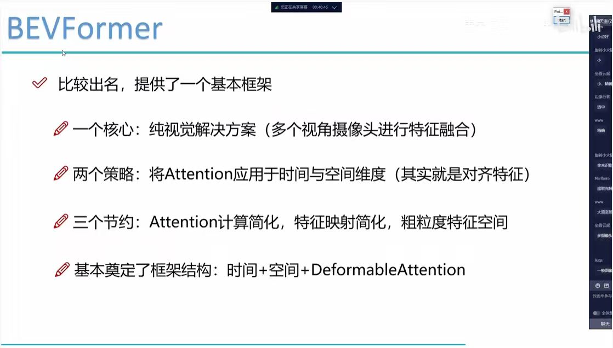
This slide outlines the BEVFormer framework, which established a standard paradigm for pure-vision BEV perception:
Defining the tensor dimensions and input structure for the BEVFormer model.
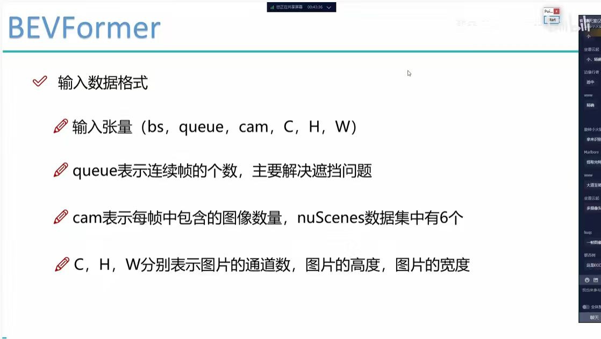
This slide specifies the input tensor configuration required for BEVFormer:
(bs, queue, cam, C, H, W)。bs: Batch Size。queue: 连续帧序列长度（主要用于处理遮挡问题）。cam: 每帧包含的相机图像数量（如 nuScenes 数据集为 6 个）。C, H, W: 图片特征维度（通道数、高度、宽度）。Illustrating the specific sensor layout utilized by the BEVFormer model.
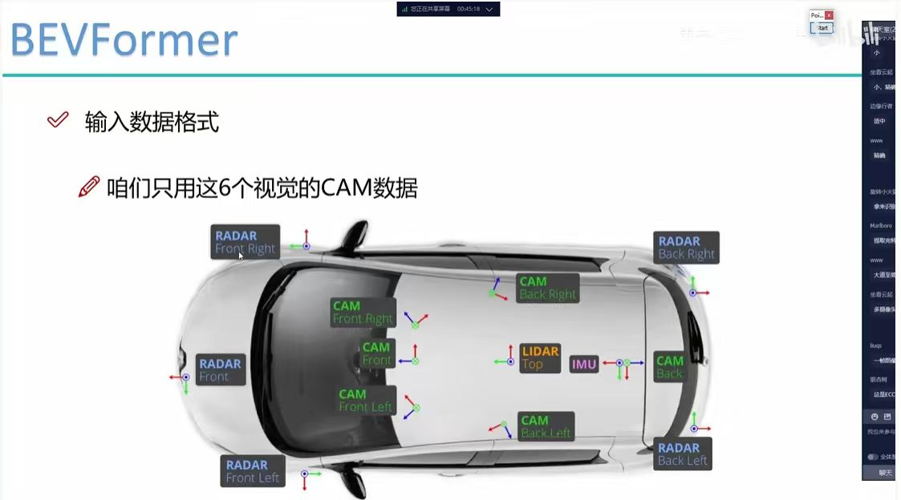
This slide highlights the specific sensor configuration for BEVFormer, emphasizing that it relies exclusively on visual camera data:
Analyzing the feature extraction stage within the BEVFormer architecture.
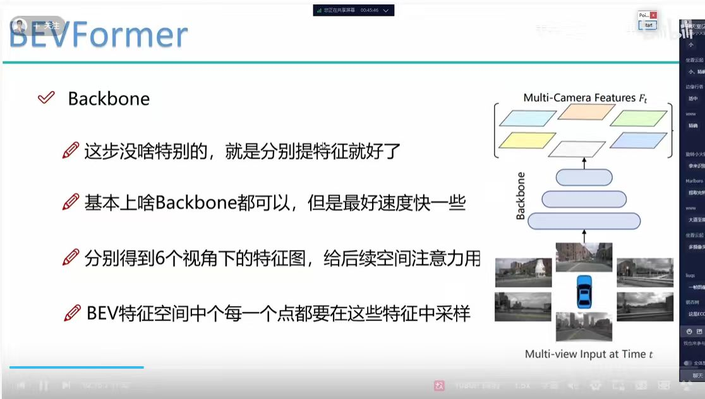
This slide details the Backbone component of BEVFormer, emphasizing its role as the initial feature extraction stage:
Exploring how BEVFormer utilizes temporal information to enhance perception.
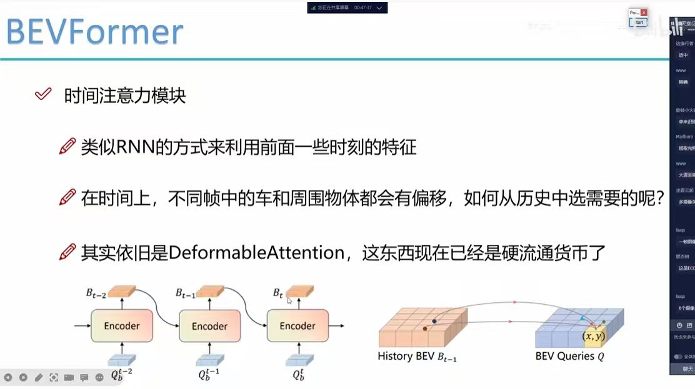
This slide explains the Temporal Attention mechanism in BEVFormer, which acts similarly to RNNs for history utilization:
Architectural details of the Deformable Attention module from ICLR 2021.
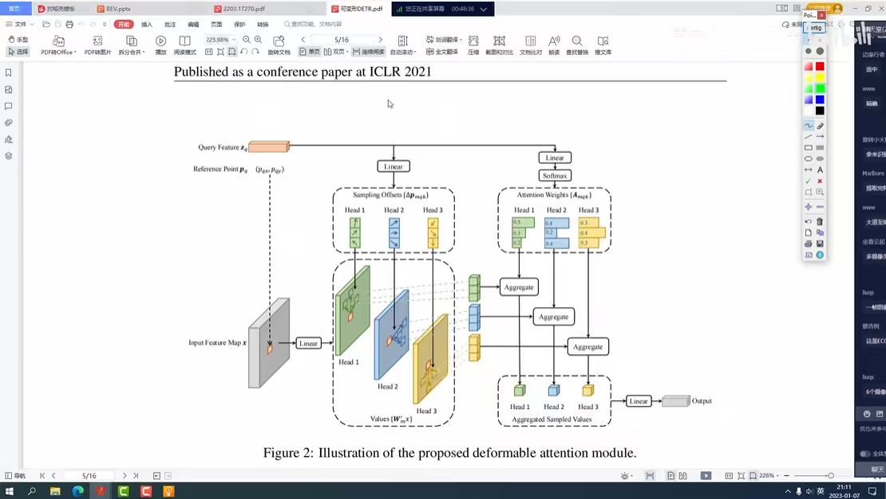
This image provides a granular breakdown of the Deformable Attention module, which serves as the core mechanism for efficient feature sampling:
Explaining how BEVFormer leverages spatial attention to aggregate multi-view features efficiently.
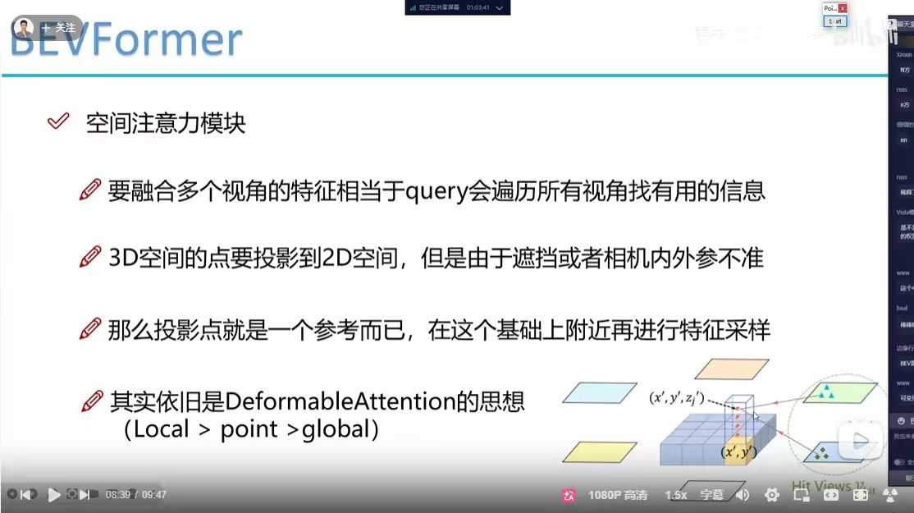
This slide details the Spatial Attention module, which addresses the challenge of mapping 3D BEV queries to relevant 2D image features:
Analyzing the optimization of spatial attention computational complexity in BEVFormer.
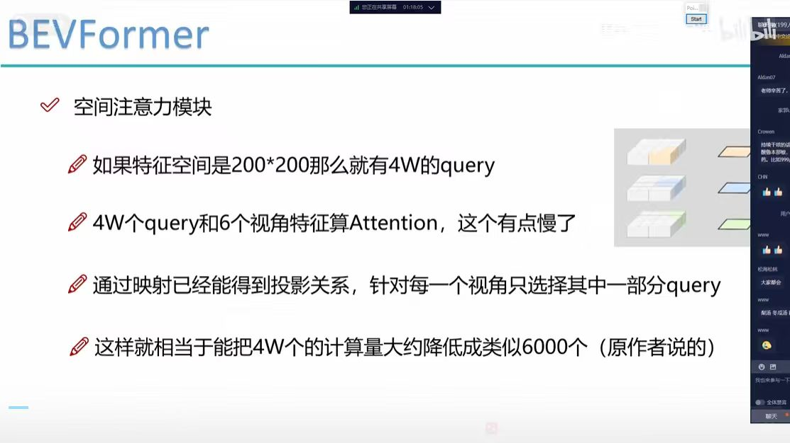
This slide highlights a critical optimization in BEVFormer, showing how it reduces the computational load of spatial attention:
Exploring advanced architectural enhancements for high-performance BEV perception systems.
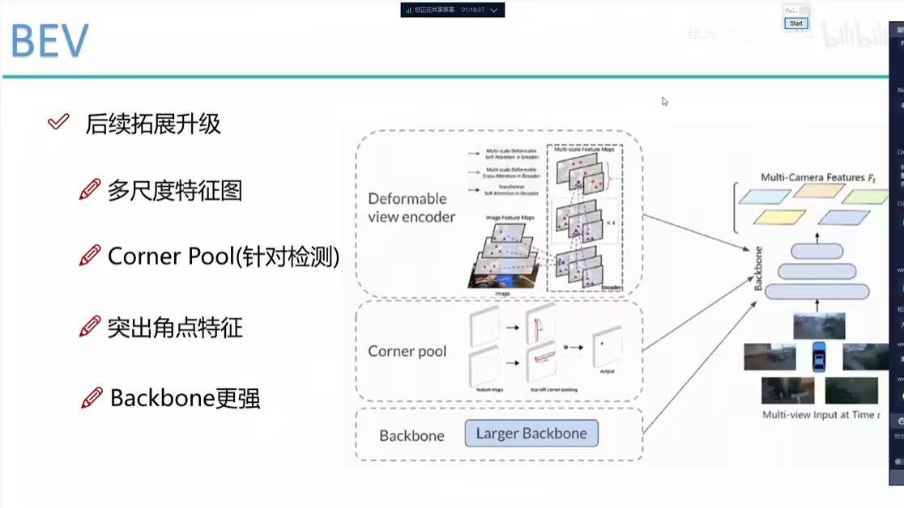
This slide outlines key directions for upgrading and scaling up BEV perception models to achieve higher accuracy:
Further architectural optimizations and detection head strategies for BEV systems.
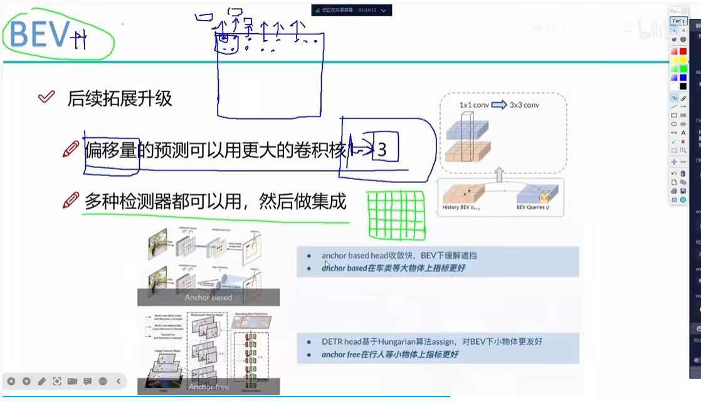
This slide focuses on practical optimization strategies for offsets prediction and detection head integration:
Analyzing the sequential processing of temporal and spatial attention mechanisms.
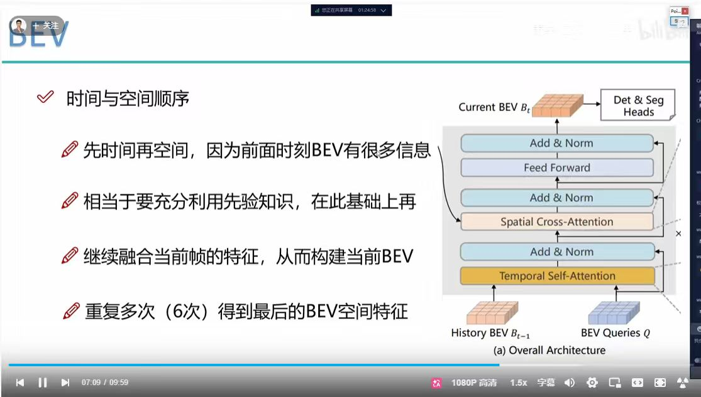
This slide illustrates the design philosophy behind the sequence of attention modules in BEVFormer:
Leveraging BEV features for diverse autonomous driving perception tasks.
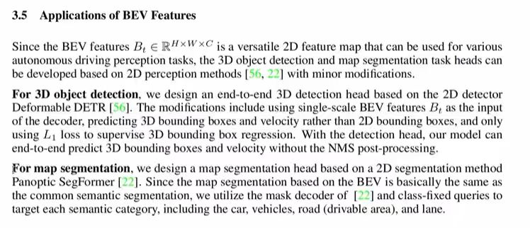
This slide details how versatile BEV features ($B_t \in \mathbb{R}^{H \times W \times C}$) are repurposed for core perception tasks: